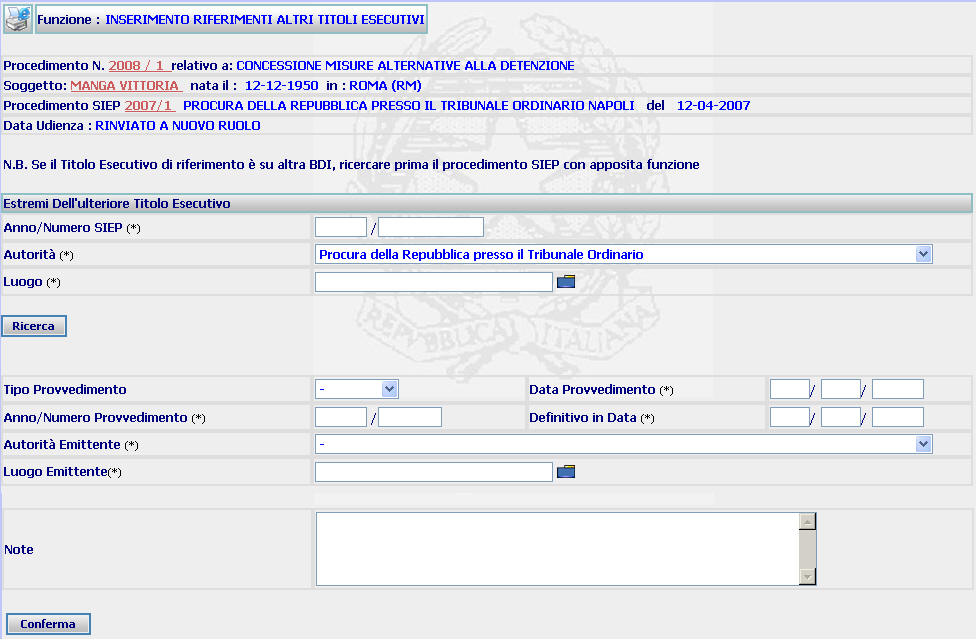
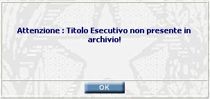
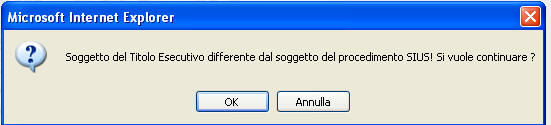

INSERIMENTO RIFERIMENTI ALTRI TITOLI ESECUTIVI: La funzione può essere utilizzata per effettuare due tipi operazioni:
1) consente di assegnare ad un procedimento Sius uno o più titoli esecutivi (procedimenti Siep) ulteriori rispetto a quello principale. In questo caso occorrerà utilizzare la presente funzione tante volte per quanti sono gli ulteriori titoli da inserire;
2) consente, altresì, esclusivamente nei casi in cui non sia possibile utilizzare i procedimenti Siep iscritti dalle Procure di appartenenza, di inserire manualmente gli estremi del titolo interessato. E' necessario, però, tener conto del fatto che quando si effettua questo tipo di operazione non si realizza alcun tipo di collegamento telematico tra il procedimento Sius e quello Siep e che, di conseguenza, non sarà possibile trasmettere telematicamente l'esito del procedimento Sius alla Procura competente.
N.B. Se il titolo da inserire è relativo ad una Procura appartenente a Distretto diverso da quello di appartenenza, occorre preliminarmente ricercare lo stesso su altra BDi attraverso le funzioni ricerca fascicolo Siep altre BDI oppure ricerca procedimenti Siep altre BDI per soggetto
LE MASCHERE VIDEO
La funzione viene realizzata attraverso le maschere seguenti in cui compaiono gli estremi del procedimento Sius, il nome del soggetto e l'eventuale data di udienza, nonchè i campi dove inserire gli estremi del titolo Siep da inserire.

COME FARE PER ...
| Per visualizzare il dettaglio del procedimento Sius l'utente deve cliccare sul link relativo all'Anno/Numero del procedimento Sius evidenziato in rosso; |

| Per visualizzare il dettaglio del soggetto l'utente deve cliccare sul link relativo al cognome/nome del soggetto evidenziato in rosso; |

| Per visualizzare il dettaglio del procedimento Siep l'utente deve cliccare sul link relativo all' Anno/Numero del procedimento Siep evidenziato in rosso; |

| Per completare l'operazione di inserimento del titolo (nel caso in cui detto titolo venga ricercato nella banca dati dei titoli esecutivi) l'utente deve: |
compilare i campi, tutti obbligatori, presenti nella prima parte della sezione "Estremi dell'ulteriore titolo esecutivo";
selezionare il bottone
. A questo punto il sistema compilerà automaticamente la parte sottostante della sezione con gli estremi del provvedimento di condanna
confermare i dati inseriti selezionando il bottone
| Per completare l'operazione di inserimento del titolo (nel caso in cui gli estremi dello stesso vengano iscritti manualmente) l'utente deve: |
compilare i campi, tutti obbligatori, presenti nell'intera sezione "Estremi dell'ulteriore titolo esecutivo";
confermare i dati inseriti selezionando il bottone
CAMPI
I campi da compilare sono i seguenti:
| Anno/Numero Siep | Campo (obbligatorio) nel quale va inserito l'anno ed il numero del procedimento Siep da ricercare |
| Autorità | Campo (obbligatorio) nel quale va inserita, attraverso l'apposita tendina, l'indicazione del tipo di Ufficio di Procura titolare del procedimento Siep da ricercare. |
| Luogo |
Campo (obbligatorio) nel quale va inserita la sede dell'Ufficio di
Procura titolare del procedimento Siep da ricercare
(digitandola per intero o selezionandola attraverso l'apposito
Pulsante di Ricerca da Lista Predefinita |
| Tipo provvedimento | Campo (obbligatorio) nel quale va inserita, attraverso l'apposita tendina, l'indicazione del tipo di provvedimento di condanna. |
| Data provvedimento | Campo (obbligatorio) nel quale va inserito la data di emissione del provvedimento di condanna |
| Anno/Numero Provvedimento | Campo (obbligatorio) nel quale va inserito l'anno ed il numero del provvedimento di condanna |
| Definitivo in data | Campo (obbligatorio) nel quale va inserita la data di irrevocabilità del provvedimento di condanna |
| Autorità Emittente | Campo (obbligatorio) nel quale va inserita, attraverso l'apposita tendina, l'indicazione dell'Autorità Giudiziaria che emesso il provvedimento di condanna. |
| Luogo Emittente |
Campo (obbligatorio) nel quale va inserita la sede dell'Autorità
Giudiziaria
che ha emesso il provvedimento di condanna
(digitandola per intero o selezionandola attraverso l'apposito
Pulsante di Ricerca da Lista Predefinita |
| Note | Campo a testo libero dove è possibile inserire eventuali annotazioni |
PULSANTI
E' presente il pulsante
 facente
parte del gruppo di
pulsanti di "Uso Comune"
facente
parte del gruppo di
pulsanti di "Uso Comune"
BOTTONI
Oltre ai comandi funzionali relativi al menù verticale è presente il seguente bottone:
|
COMANDI |
DESCRIZIONE |
|
|
A fronte di tale comando, il sistema compila automaticamente la parte sottostante della sezione con gli estremi del provvedimento di condanna. |
|
|
A fronte di tale comando, il sistema dopo aver verificato la validità dei dati specificati, inserisce il titolo selezionato nel procedimento SIUS corrente e presenta la maschera di dettaglio riferimento altro titolo esecutivo |
CONTROLLI
Il sistema, oltre a verificare che tutti i campi obbligatori siano stati correttamente compilati, effettua i seguenti controlli:
|
verifica che il titolo ricercato sia presente in archivio ed in caso contrario fornisce il seguente messaggio |

|
verifica che il soggetto del titolo ricercato sia coincidente con quello del procedimento Sius ed in caso contrario fornisce il seguente messaggio |
